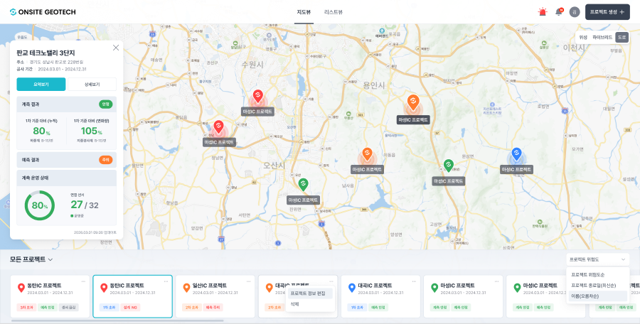
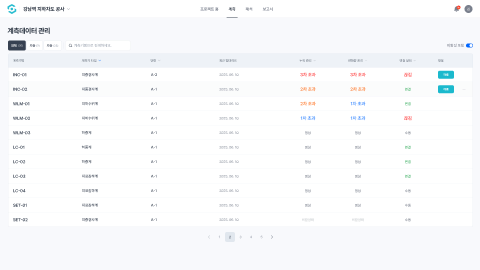
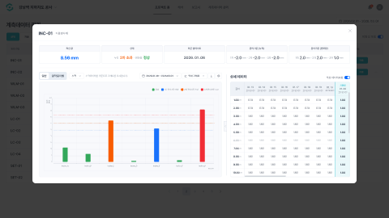
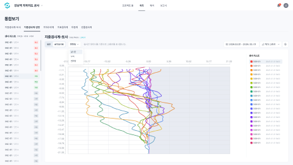
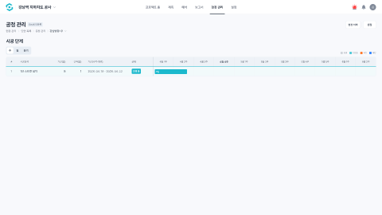
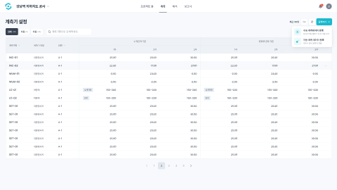
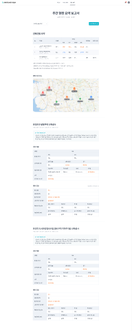

AI가 화면을 자동 생성하려면, 먼저 "온사이트엔 어떤 종류의 화면이 있나"를 알아야 한다. 실제 화면 약 60개를 분류한 결과 — 모두 7종에 들어갔다.
최종 목표 = 기획 넣으면 AI가 온사이트 화면을 자동 생성. 그러려면 ① 재료(디자인 시스템) 와 ② 설명서(화면 유형·규칙) 둘 다 필요하다.
분류 전에 아래를 벗기고 목적만 남긴다. 이게 화면 수를 종류 수로 줄이는 핵심.
✕ 상태 — 빈 화면·입력중·업로드중·완료
✕ 표면 — 모달·위저드·도면 캔버스·인라인 편집
→ "단면 추가 모달"도 "완료 화면"도 목적은 등록 → 같은 종류.
지도 위 위치로? → 지도형
여러 항목 표로? → 목록형
한 대상 깊이? → 상세형
여러 지표 차트? → 모니터링형
시간축(단계)? → 일정/간트형
값 넣고 저장? → 등록/설정형
정적 보고/인쇄? → 보고서형






